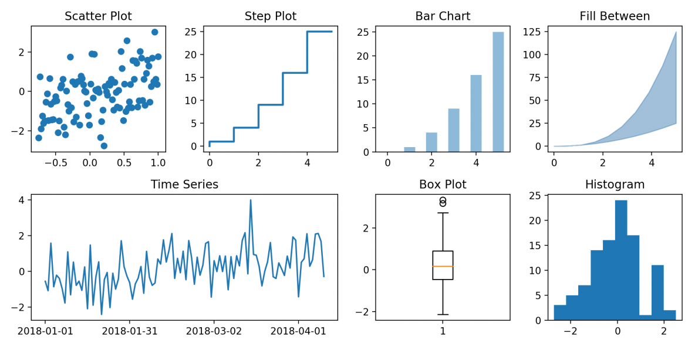

Matplotlib: Visualization with Python¶
Matplotlib is a comprehensive library for creating static, animated, and interactive visualizations in Python. Below are some of the example plots that can be made using the Matplotlib library.

Installation Using pip¶
!pip install matplotlib
Matplotlib is a very vast library, but in this module we’ll just talk about plotting the 2-D graphs. Most of the matplotlib utilities lies under the pyplot submodule and it is usually impoterd under the plt alias, so for 2-D plots we will use the pyplot submodule. So let’s import the module and start plotting a very simple graph using the plot function, which takes two iterables as the input and returns a plotted graph using the given coordinates.
# Importing pyplot submodule from matplotlib as plt
import matplotlib.pyplot as plt
Plotting¶
plt.plot()¶
plt.plot([1,2,3,4],[1,4,2,3])
plt.show()

plt.scatter()¶
Now if we want to plot individual points rather than connecting them using a line, we can use another function called scatter which takes the same input format.
plt.scatter([1,2,3,4],[1,4,2,3])
plt.show()

If you’ve noticed every time we plot a graph, we call plt.show() function. This is because everytime, we start plotting a graph, matplotlib maintains a graph buffer so that we can plot multiple graphs in a single plane, and whenever plt.show() is called, it flushes the maintained buffer
#Plotting 4 Graphs in one plane
plt.plot([1,2,3,4],[1,4,2,3], c="lightblue") # c parameter is for defining color
plt.plot([1,2,3,4],[4,1,3,2], c="lightgreen")
plt.scatter([1,2,3,4],[1,4,2,3], c="darkblue")
plt.scatter([1,2,3,4],[4,1,3,2], c="darkgreen")
plt.show()

We can also provide a list of colors in the c parameter, to define color of every seperate point.
plt.scatter([5,3,4,1,2],[2,3,4,3,5], c =["red","blue","green","red","black"])
plt.show()

plt.bar() & plt.pie()¶
Similarly, we have some other data visualisation functions like : BarGraphs, PieCharts, etc. So let’s try and plot each of them and we can use another function called subplot to plot multiple graphs in a single plot.
There are tons of other parameters too in these plots, that can make the representation more representative and useful. For eg:
plt.xlabel("X - Axis") –> Used to represent X-Axis label
plt.ylabel("Y - Axis") –> Used to represent Y-Axis label
plt.title("Graph Title") –> Used to give graphs a Title
plt.legends() –> Used to define a legend for graph.
# subplot signature => subplot(nrows, ncols, index, **kwargs)
import numpy as np
plt.figure(figsize=(15,5))
# ---Bar Graph at 1st index of subplot---
plt.subplot(1,2,1)
Products = np.array(["P1","P2","P3","P4","P5"])
Sale2020 = np.array([200,100,400,100,400])
Sale2021 = np.array([300,200,300,400,300])
plt.title("Product Sales in 2020 v/s 2021")
plt.xlabel("Product Names")
plt.ylabel("Sale Quantity")
plt.bar(Products,Sale2020, align = 'edge' ,width = 0.5, label="2020 Sales")
plt.bar(Products,Sale2021, align = 'center',width = -0.5, label="2021 Sales")
plt.legend()
# --- Pie Chart at 2nd index of subplot ---
plt.subplot(1,2,2)
plt.title("Market Share of the Investors")
Investors = ["A","B","C","D","E"]
Share = [40,25,20,10,5]
plt.pie(Share, labels = Investors,explode=[0,0,0,0,0.2], normalize=True)
plt.show()

Plotting some data¶
Now instead of plotting these small no. of points, let’s plot some good amount of data. So let’s first import the data using np.load() function and plot them.
import numpy as np
a = np.load("./Data/Matplotlib/a.npy")
b = np.load("./Data/Matplotlib/b.npy")
plt.scatter(a,b)
plt.show()

Now consider a dataset which contains 2 different classes.
X = np.load("./Data/Matplotlib/X_data.npy")
Y = np.load("./Data/Matplotlib/Y_data.npy")
Here X contains the x & y co’ordinates of the data and y contains the information of which class every corresponding instance belongs to.
X looks like:
[[ 8.28200531, -4.84599105],
[-1.34017991, 5.32077278],
[ 8.04211253, -3.94098662],
[ 8.69884399, -3.50222611],
[-3.61081635, 7.61528245],
[ 8.09647278, -4.52234241], ... 100 instances]
y looks like:
[1, 0, 1, 1, 0, 1, ... 100 instances]
So Let’s plot the graph between using X
plt.scatter(X[:,0], X[:,1])
# Here [:] is used to correspond to every element in the nd_array. It is an advanced loop provided by numpy.
plt.show()

Now to provide colors to these instances we can make use to Y. There can be a lot of ways to do this. One way can be to prepare a list of color and give it to c like this
colors = []
for i in range(len(Y)):
if Y[i] == 0:
colors.append("red")
if Y[i] == 1:
colors.append("blue")
plt.scatter(X[:,0],X[:,1],c = colors)
plt.show()

But this approach will only work if we know how many classes my data has, so another way is instead of providing color names to the color list, we assign a correspoding number, and prepare a list like
Instead of colors = ["red","blue","red","red","blue",...]
we make colors = [0,1,0,0,1,...]
but notice this new list is same as Y, so we can give Y in my c parameter and it will automatically assign different colors, to different classes and plot them.
plt.scatter(X[:,0], X[:,1], c = Y)
plt.show()

But notice here we doesn’t have freedom to choose colors for the classes, it will automatically assign different colors to them. There can be a lot of different ways too, to achieve these results.
Further Readings¶
We’ve seen the most commonly used functions of Matplotlib that are most commonly used in the field of Machine Learning and Data Analysis.
However there is a variety of other plots that matplotlib.pyplot provides us. For Example: Box Plot, Step Plot, Time Series, histogram, etc., which can be used depending on the type of data and other factors. All these Plots also contains a variety of parameters to make them more beautiful and useful.
Other submodules of Matplotlib can also be used for plotting 3-D plots, in a very beautiful and appealing manner. To explore more such type of plots, one can always refer to the matplotlib official Docs at: https://matplotlib.org/stable/contents.html